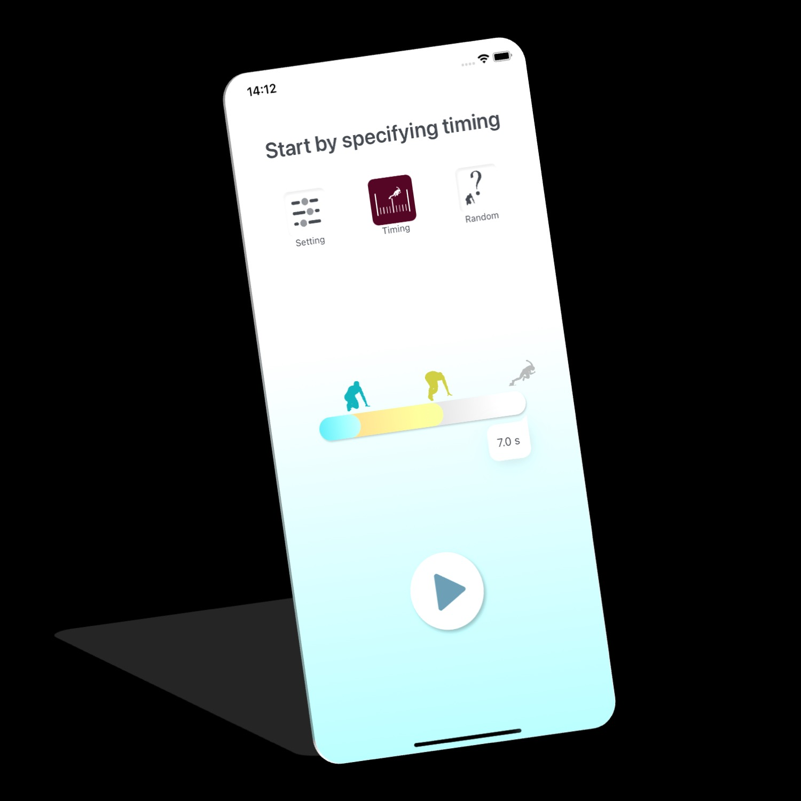
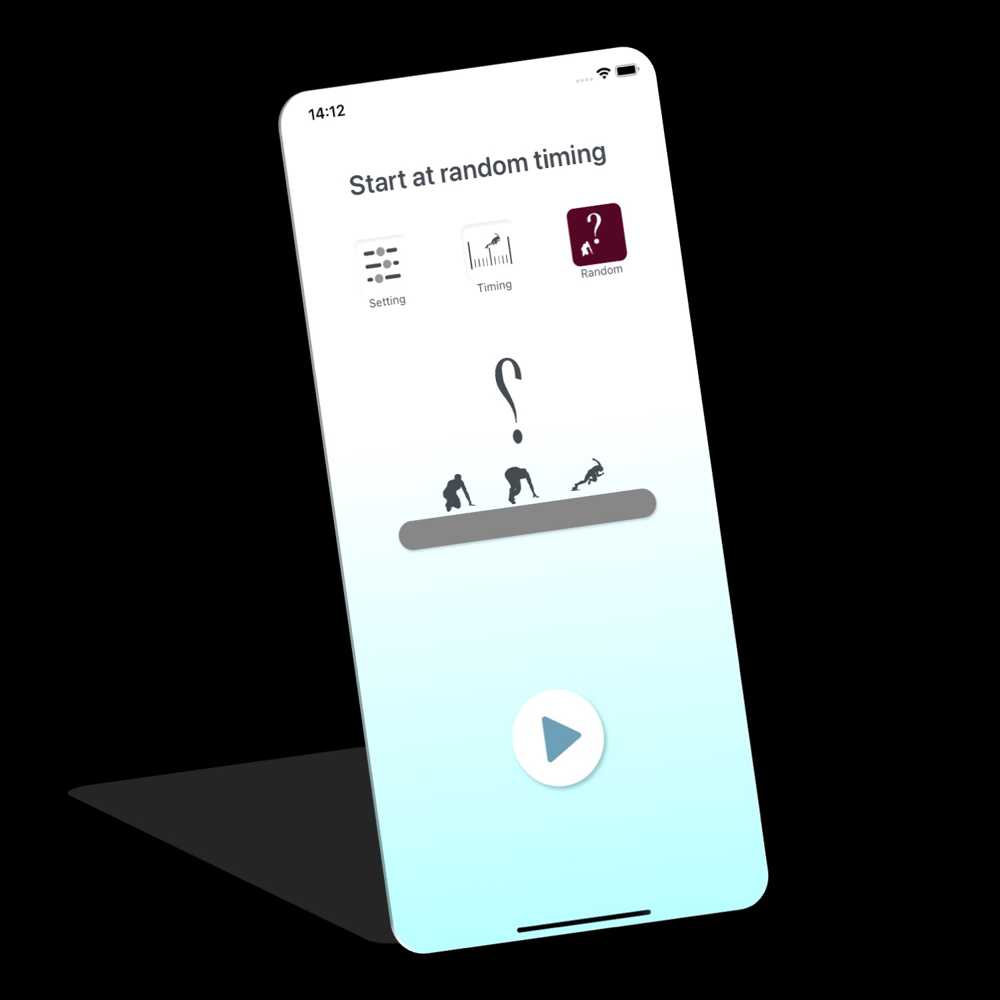
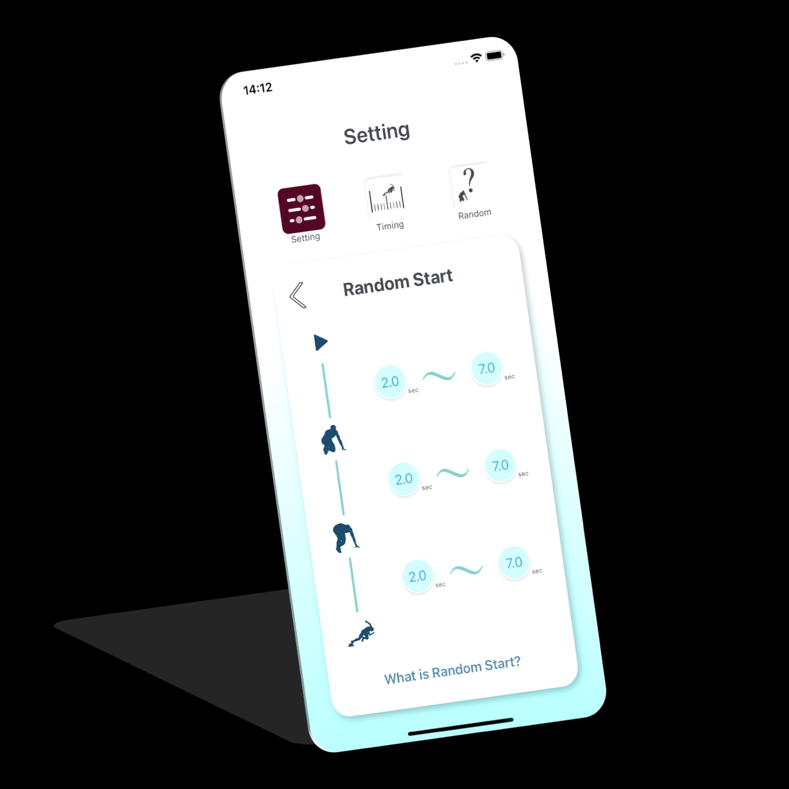
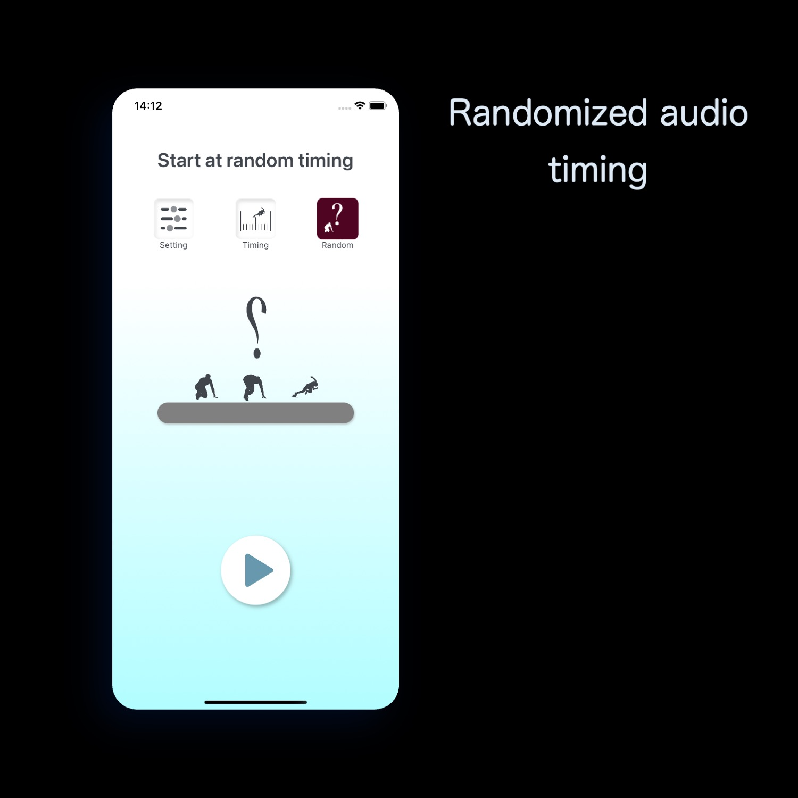

Choose voice cues or start sounds
Select human voice cues or start sounds for your session. Cues such as “On Your Marks,” “Set,” and a pistol sound help you practice the start sequence.
Start practice for track athletes, swimmers, and coaches
Practice sprint starts on the track or start cues for swimming. Starter Kit plays human voice cues and start sounds from your iPhone. Set the timing, use random intervals, or trigger the start manually to suit your session.
Basic features are free to use.
21,000+ downloadsas of September 20, 2026
Download on the App Store
CORE FEATURES
Select your sound and start method. Use Starter Kit for individual repetition, team sessions, or starts directed by a coach.
Select human voice cues or start sounds for your session. Cues such as “On Your Marks,” “Set,” and a pistol sound help you practice the start sequence.
Set the time before a cue and the intervals between cues. Give yourself time to get ready and repeat the same sequence at a timing you choose.
Randomize the intervals between cues to make the start harder to anticipate. Practice listening for the sound and reacting to it.
Trigger the start manually at a time you choose. Coaches can check that athletes are ready before giving the cue during individual or team practice.
Measure your reaction at the start and use the result to review your training.
Record the start movement, then review your body position, form, and response to the sound.
WHERE TO USE IT
Practice moving from your starting position in response to a cue. Use set intervals to repeat a sequence, or random timing to focus on reacting to the sound.
Starter Kit also supports swimming start sounds. Use these sounds to practice reacting to a swimming start cue, with set intervals, random timing, or a manual start to suit the session.
GET STARTED FOR FREE
Try Starter Kit’s free basic features in your track or swimming practice. Check the App Store and the information in the app for in-app purchases and the availability of individual features.
APP SCREENS




QUICK ANSWERS
Starter Kit is an iPhone app for track sprint starts and swimming start practice. It plays human voice cues and start sounds, with set intervals, random timing, or manual starts. Basic features are free to use.
Yes. Starter Kit supports swimming start practice as well as track sprint starts. Swimming start sounds are also available, so you can practice reacting to a swimming start cue. Choose set intervals, random timing, or manual starts to suit your session.
Yes. You can choose human voice cues or start sounds. Cues such as “On Your Marks,” “Set,” and a pistol sound let you practice the start sequence.
There are three methods: set the timing, use random intervals, or trigger the start manually. Use them for repeating a sequence, reacting to unpredictable cues, or receiving a cue from a coach.
Yes. Set the time before a cue and the intervals between “On Your Marks,” “Set,” and the pistol sound. This gives you time to get ready or repeat practice at a consistent timing.
Random intervals make the start timing harder to predict. Use them to practice listening and reacting to the sound instead of moving to a fixed rhythm.
Yes. A coach can check that athletes are ready, then trigger the start manually at a chosen moment. This works for team practice and individual coaching.
Yes. Starter Kit’s basic features are free to use. Check the App Store and the information in the app for in-app purchases and the availability of individual features.
Yes. Set intervals or random starts let you practice without another person giving the cue. Manual starts are also available for sessions with a coach or team.
Yes. The app can measure your reaction at the start so you can use the result when reviewing a training session.
Yes. Record the start movement and review your form and response to the sound afterward.
DEVELOPER
Independent iOS developer, medical doctor, and runner. Starter Kit brings start practice to your iPhone, for both track and swimming sessions.